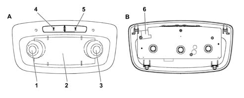

PASSENGER COMPARTMENT COURTESY LIGHTS
- Path
- Descriptions > 70 FITTINGS > 7040 BODYSHELL INTERIOR TRIMS AND FITTINGS > PASSENGER COMPARTMENT COURTESY LIGHTS
- Kind
- system description
- Applies to
- all engines; all production periods
- Interactive page
- https://sloeber94.github.io/elrnDB-lThss/en/#/841005834
Applies to: all engines; all production periods
CENTRE REAR COURTESY LIGHT
The rear courtesy light is located in the end section of the roof. It contains three lamps, one centre and two side.

- A - Front view
- B - Rear view
- 1 - Left xenon bulb (spot) (6W)
- 2 - Halogen centre bulb (spot) (10W)
- 3 - Right xenon bulb (spot) (6W)
- 4 - Button for activating left light
- 5 - Button for activating right light
- 6 - Connector.